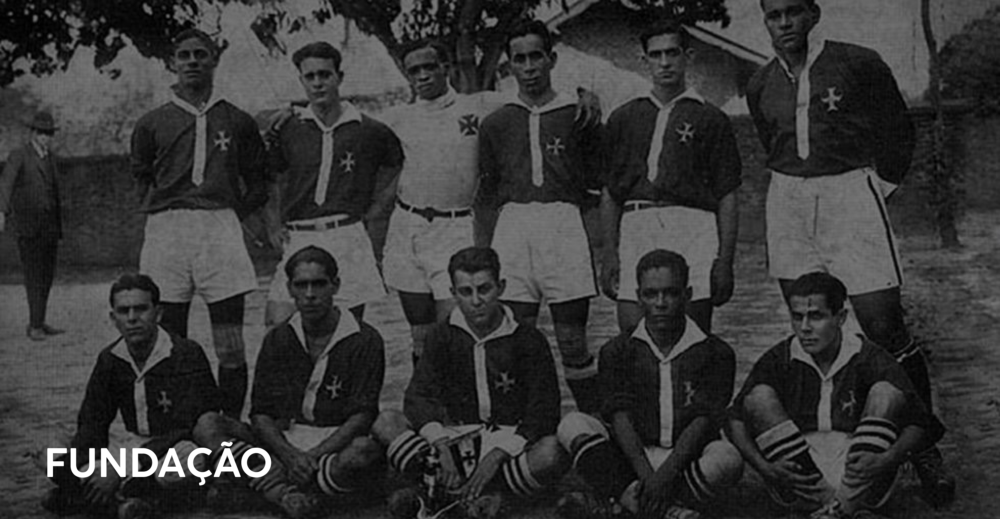
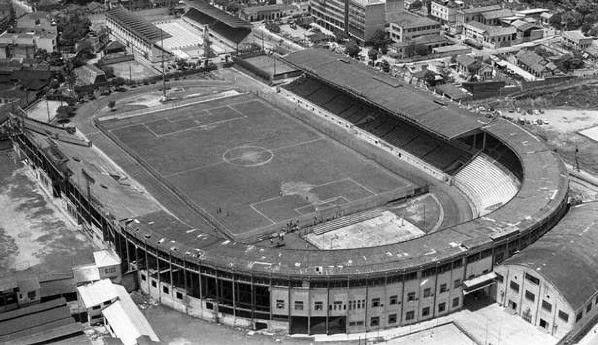
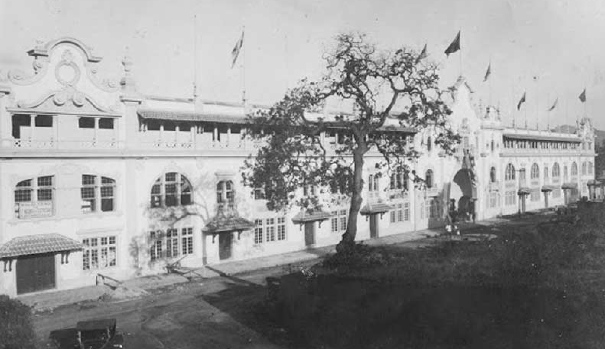
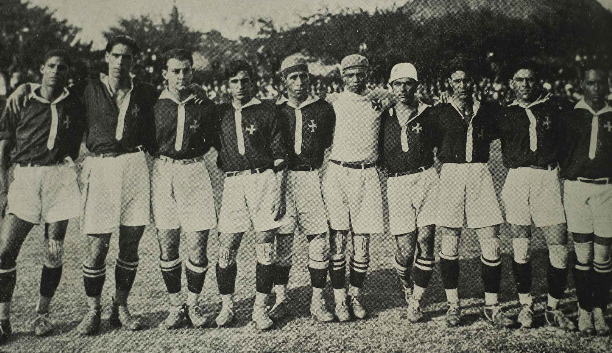

O Club de Regatas Vasco da Gama foi fundado em 21 de agosto de 1898, no bairro da Saúde, no Rio de Janeiro. A reunião inaugural ocorreu na sala da Sociedade Dramática Filhos de Talma, na Rua da Saúde, nº 293 (atualmente Rua Sacadura Cabral, nº 345). O nome foi uma homenagem ao navegador português Vasco da Gama, celebrando os 400 anos da descoberta do caminho marítimo para as Índias. Inicialmente dedicado ao remo, o clube logo se destacou por sua postura inclusiva e combativa contra o racismo, tornando-se um símbolo de resistência e igualdade no esporte brasileiro.



HOME